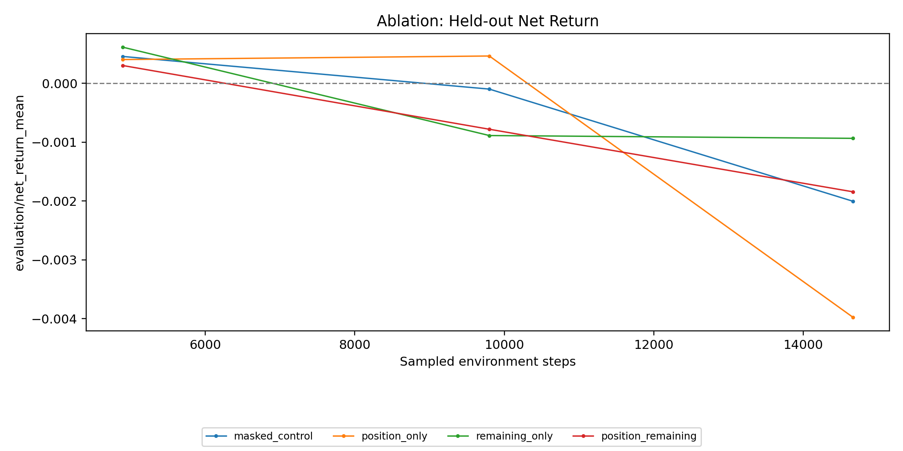

R4-v1-min solver-state implementation and smoke audit
Dataset-v2 RTH · Family 00 · fixed exact 1 bp · four matched three-update cells · 25 September 2026
Observation contract
[market_window_flat | task_embedding | solver_state] masked -> [0, 0] position -> [current_position, 0] time -> [0, remaining_horizon_fraction] both -> [current_position, remaining_horizon_fraction] market=300 task=32 base_obs_dim=332 state=2 agent_obs_dim=334 observation_schema_id=r4_v1_min
TaskSpec.obs_dim remains the 332-wide base market-plus-task contract. ITraderEnv owns causal state and assembly. A bias-free Linear(2,8)->ReLU branch adds separate actor and value residuals; the masked vector therefore preserves the base path exactly.
Matched design and runtime
Masked, position-only, time-only, and combined cells used the same 60×5 dataset-v2 RTH input, 12 symbols, crossed 32-task panel, stream-worker sampling, random/generated Family 00 tasks, seed 20260925, evaluation seed 30260943, local-worker topology, and fixed 1 bp net-return objective. PBT and cost scheduling were disabled.
Runtime: Python 3.11.13, Ray 2.58.0, Gymnasium 1.2.2, PyArrow 17.0.0, Torch 2.3.1, Pandas 2.1.4. The first attempted launch stopped before training because its child process resolved an obsolete interpreter; the loadout was pinned to the repository virtual environment and the uncontaminated cells were rerun.
Update-3 held-out economics
| Cell | Net return | Sharpe / √bar | Gross return | Turnover | Position changes | Short / flat / long | Explained variance |
|---|---|---|---|---|---|---|---|
| Masked | -0.2004% | -0.03873 | -0.0616% | 13.875 | 12.906 | 37.62 / 12.38 / 50.00% | 0.0163 |
| Position | -0.3977% | -0.07080 | +0.0004% | 39.812 | 38.312 | 42.66 / 15.36 / 41.99% | 0.0135 |
| Time | -0.0934% | -0.02474 | +0.0329% | 12.625 | 9.438 | 47.76 / 3.65 / 48.58% | 0.0126 |
| Position + time | -0.1843% | -0.04036 | -0.0162% | 16.812 | 15.406 | 34.75 / 15.45 / 49.80% | 0.0115 |
Time-only was least negative. Position-only was the clearest failure mode: gross return was nearly zero, but excessive switching pushed net return to −0.398%. Each cell briefly became positive before update 3, but checkpoint interval 3 retained only the terminal state; those transient points are not replay-authoritative.

Matched controls
| Control | Net return | Sharpe / √bar | Turnover | Short / flat / long |
|---|---|---|---|---|
| Flat | 0.0000% | 0.00000 | 0.000 | 0 / 100 / 0% |
| Long-only | -0.0979% | +0.00827 | 2.000 | 0 / 0 / 100% |
| Short-only | +0.0579% | -0.01558 | 2.000 | 100 / 0 / 0% |
| Seeded random | -1.2144% | -0.24465 | 130.625 | 32.86 / 34.29 / 32.85% |
| Seeded untrained R0 | +0.0618% | -0.00976 | 2.000 | 75 / 0 / 25% |
The early positive smoke values align with an untrained 75%-short/25%-long tendency and the panel's small short-only return advantage. They do not yet establish learning beyond initialization or directional exposure.
Replay and state-conditioned behavior
All retained checkpoints reproduced selected net return in fresh processes: masked and position had zero delta; time and combined differed only by 1.08×10−19 and 2.17×10−19. Dataset, panel, source, schema, config, checkpoint hash, and lineage evidence remained intact.
| Cell | Step-weighted short / flat / long | Mean action probabilities | Switching | Inference entropy | Value mean ± std |
|---|---|---|---|---|---|
| Masked | 30.27 / 13.57 / 56.16% | 34.43 / 30.36 / 35.21% | 8.84% | 1.0669 | −3.245 ± 0.329 |
| Position | 35.72 / 18.94 / 45.33% | 36.55 / 32.94 / 30.51% | 26.24% | 1.0699 | −3.294 ± 0.360 |
| Time | 41.07 / 4.00 / 54.92% | 35.80 / 26.83 / 37.37% | 6.46% | 1.0474 | −3.262 ± 0.336 |
| Position + time | 27.08 / 16.93 / 55.99% | 34.66 / 29.88 / 35.47% | 10.55% | 1.0675 | −3.287 ± 0.348 |
The position cell changes probabilities with prior position, but flat-state decisions enter exposure 67.65% of the time and create excess turnover. In the combined cell, long probability falls from 37.61% in the earliest quarter to 33.53% near termination while flat rises from 28.52% to 31.16%. This verifies state sensitivity, not economic usefulness. Entropy remains near ln(3)=1.0986, value fit is weak, and clip_fraction remains NaN.
Next gate
Run a longer matched masked-versus-combined probe with checkpointing at every evaluation improvement, the same fixed 1 bp panel and seeds, and state-conditioned diagnostics retained. Only durable state use without turnover explosion can justify adopting R4-v1 as the R1 observation contract or admitting it to PBT.
Evidence
- Markdown source of truth
- Four-cell comparison summary
- Fresh checkpoint replays
- State-conditioned diagnostics
- Matched controls
Validation: 268 repository tests before launch; 19 focused diagnostic tests after the evidence seam; final full suite 275 passed; healthcheck and scoped pre-commit passed; memory remained above the 2 GiB hard stop. No final-test access, PBT, R1, commit, staging, or deletion.